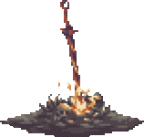

.png)
|
|
.png)
|
Dark Souls III é um jogo do género RPG de ação, o quarto da série Souls, desenvolvido pela
FromSoftware e co-realizado por Hidetaka Miyazaki, o criador da série. Dark Souls III foi lançado para
Microsoft Windows, PlayStation 4 e Xbox One no dia 24 de março de 2016 no Japão, e a 12 de abril de 2016
no resto do mundo.
Dark Souls III recebeu aclamação por parte da critica especializada. Os elogios focarem-se sobretudo nos
visuais e nas mecânicas de combate, fazendo lembrar o ritmo rápido de Bloodborne, o jogo anterior da
FromSoftware. No site de análises agregadas Metacritic a versão Microsoft Windows conseguiu a pontuação
de 90/100, o que indica “aclamação universal”.
Dark Souls III é um jogo do gênero RPG de ação numa perspectiva de terceira pessoa, similar aos
jogos anteriores da série. De acordo com o director Hidetaka Miyazaki, o desenho do jogo “é muito
parecido com Dark Souls II”. Os jogadores tem uma grande variedade de armas como arcos, explosivos como
bombas de fogo, espadas grandes e duplas, e escudos que repelem os ataques inimigos, protegendo o
jogador. Em adição, os ataques podem ser evitados com o dodge-rolling. As fogueiras, que servem como
ponto de controle intermediário, regressam para este jogo. As cinzas, de acordo com Miyazaki, têm um
papel importante no jogo.
A Magia está incluída no jogo, assim como a barra de magia, similar a Demon's Souls. Cada ataque tem
dois estilos diferentes: um é o padrão, enquanto que outro dá melhorias para o jogador, além de ser um
pouco mais poderoso. Enquanto fazem milagres e feitiços, os pontos de magia dos jogadores são consumidos
e começam a decrescer. Para voltar a enchê-los, os jogadores têm de consumir Ash Estus Flask; existem
dois tipos de Estus Flasks: um enche pontos de magia e o outro pontos de vida. O combate e os movimentos
são mais rápidos e fluidos que em Dark Souls II. Muitos dos movimentos do jogador, como andar para trás
e balançar armas mais pesadas, podem ser feitos de uma maneira mais rápida, permitindo que os jogadores
façam mais ações num espaço de tempo mais curto.
Por todo o jogo, os jogadores vão encontrar vários tipos de inimigos, com vários comportamentos
diferentes. Alguns alteram o padrão de ataque durante os combates. Algumas características de combate
são introduzidas em Dark Souls III, incluindo a Ready Stance, que são habilidades para os jogadores
causarem muito mais dano aos inimigos que os ataques normais. São também introduzidas pequenas pedras
incrustadas que além de servirem como lanternas, proporcionam um papel adicional no jogo. Dark Souls III
foca-se mais no aspecto role-playing, na qual a construção da personagem é expandida e as armas são
melhoradas para providenciar mais opções tácticas ao jogador.
